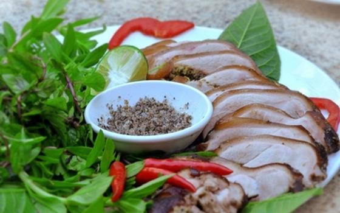

Giá : 90.000 VNĐ/đĩa
Nguyên liệu:
- Thịt lợn mán.
- Gia vị: muối, dầu hào, nước dừa tươi, ớt, sả, hạt dổi, rau húng, rau mùi.
Thực hiện:
- Thịt lợn mán rửa sạch, để ráo nước, rồi ướp cùng với các nguyên liệu muối, dầu hào, hạt dổi và sả băm nhỏ tầm 30 phút.
- Cho chõ hấp lên bếp, cho thịt và đổ nước dừa tươi vào (có thể thay nước dừa tươi bằng bia). Hấp trong vòng 30 phút. Thịt lợn mán có mùi hôi rất đặc trưng nên khi chế biến cần sử dụng các nguyên liệu làm át mùi hôi của lợn mán.
- Sau khi chín, vớt thịt ra đĩa, thái miếng mỏng rồi trang trí với rau thơm.